Reels | Shorts
-
✨ Ignite Your Mind & Spark Creativity 🔥
Imagination is a skill you can spark and sustain, fueled by neuroscience and psychology, and discover stories of passion and perseverance that transformed industries. Imagination isn’t random but a trainable skill.
-
⚡️ Unlock Creative Ideas in Seconds 💡
Discover proven strategies to reignite your creative spark & crush mental blocks in seconds. Tackle creative blocks head‑on by exploring simple, science‑backed techniques to kickstart your imagination & boost productivity.
-
From Setback to Comeback⁉️ Get Back Up 🔥
Rise after setbacks with unyielding resilience—your secret weapon to overcome adversity & achieve your goals. Find strength in adversity to rise above challenges. Resilience empowers you to rise when life knocks you down.
-
Why Habits Trump Dreams Every Day 🔥
Discover how to transform your dreams into daily habits that drive success, dedication, and unstoppable motivation. Learn how to cement new routines into lasting success habits and stay motivated through every challenge.
-
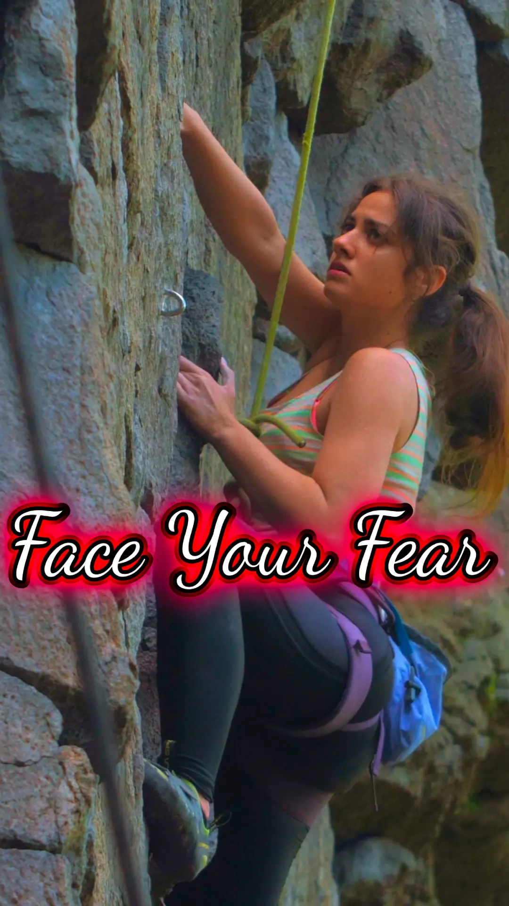
Could You Face Your Worst Fear? 😨➡️💪
A motivational clip on how trusting instincts, perseverance & support fuel courage to overcome challenges. Bravery takes many forms—whether facing personal adversity, standing up for what’s right, or taking action in a crisis.
-
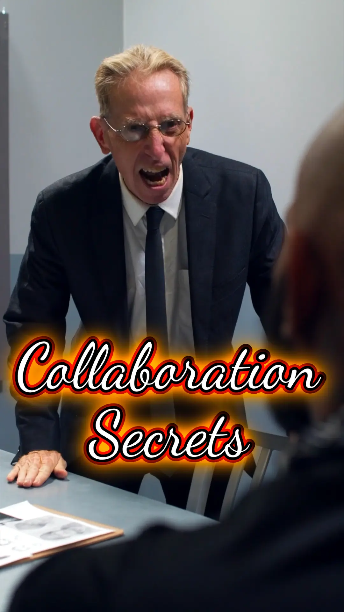
The Secret to Winning Together 🤫🤝
Transform disagreements into collaborative wins with empathetic negotiation, active listening, and interest-based bargaining. Challenge the zero‑sum mindset. Collaborative conflict resolution leads to mutual success & respect.
-
💪🔥 Push Past Limits: Unlock Your #Grit
Discover how mastering emotional control transforms stress into growth. Unlock key strategies to build trust, honor, and a life of resilience and calm. Emotional management lays the groundwork for lasting trust & honor.
-
Unlock Your 🧘♂️ Calm: Build Trust
Discover how mastering emotional control transforms stress into growth. Unlock key strategies to build trust, honor, and a life of resilience and calm. Emotional management lays the groundwork for lasting trust & honor.
-
The Power of Your Word! 🔥 Why It Matters
Imagine a world where promises truly meant something. Keeping your word isn’t just about reliability—it’s about trust, credibility, and self-respect. Discover how honoring commitments shapes your legacy.
-
Integrity Ignited: Spark Your Truth 🔥
Discover integrity’s power: aligning actions and values to build trust, authenticity, and success. Uncover how living with honesty and purpose transforms decisions and relationships.
-
 Unexpected Kindness Sparks Joy ✨
Unexpected Kindness Sparks Joy ✨
Discover the power of unexpected kindness and how it transforms both the giver & receiver. When kindness is spontaneous, it triggers the brain's reward center, releasing dopamine+serotonin, boosting happiness & well-being.
-
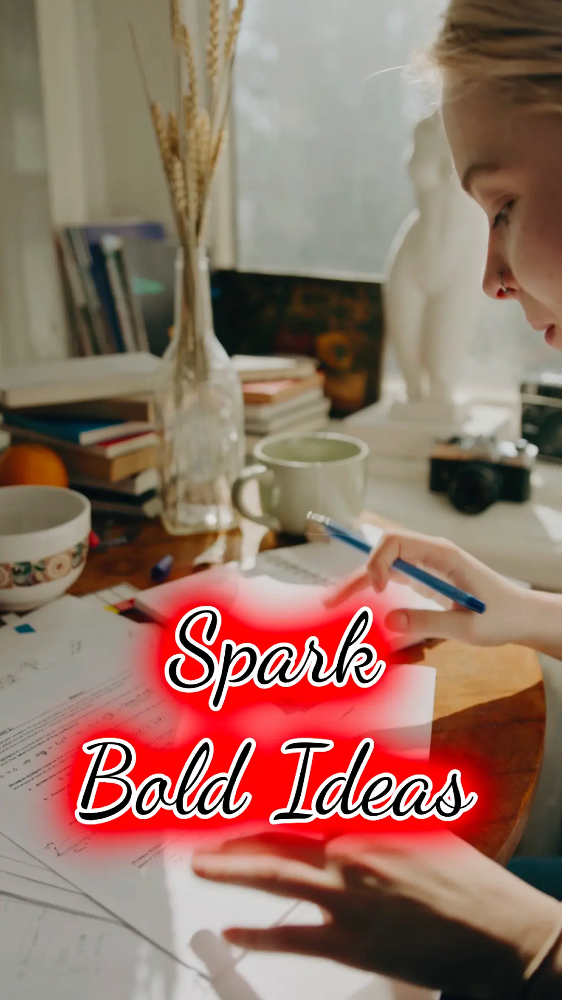
🔥 Ignite Creative Revolutions ⚡️
Explore how visionary individuals have defied convention to spark revolutions in their fields, leaving a lasting impact on the world. Curiosity and determination can lead to transformative science and groundbreaking businesses.
-
🏄 Flow Focus: Master Your Day‼️
Hidden Brilliance: Discover the power of flow, focus, brilliance, performance, and intentionality. Explore how intentional focus transforms ordinary moments into extraordinary opportunities.
-
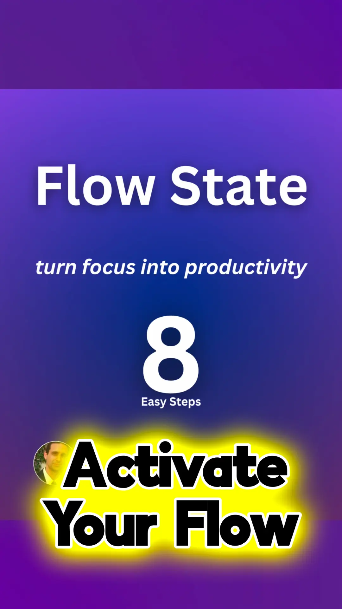
🚀 Enter Flow: Boost Your Focus in 8️⃣ Steps!
Discover how to enter Flow State and unlock peak performance with 8 actionable steps for Focus, Productivity, and Mindfulness. Eight easy yet powerful strategies to transform focus into tangible productivity.
-
🔓 Unlock Genius: Ignite Ideas! 🔥
Unlock Creativity: Dive into a burst of creativity, art, science, research, and innovation that inspires breakthrough ideas and fuels persistent determination. Art, science & unwavering determination merge to spark innovative ideas.
-
Grit & Grind 🔥 True Resilience
Unlock everyday grit: inspiring stories of resilience, determination, and success overcoming challenges. True grit isn’t just for the big moments in life—it’s built through daily challenges, persistence, and an unshakable mindset.
-
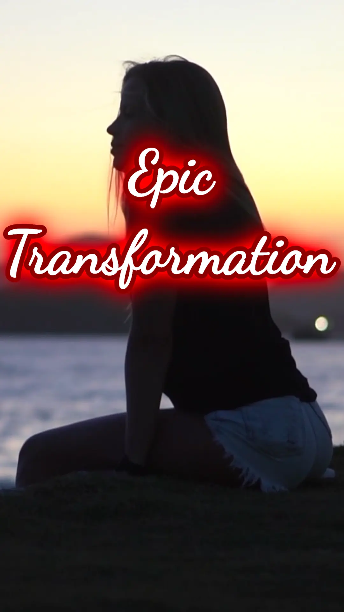
Maya's Epic Comeback 🚀 #RESILIENCE
Maya's inspiring journey from personal setbacks to entrepreneurial success highlights the transformative power of resilience. Her story demonstrates how overcoming adversity can lead to personal growth and achievement.
-
 The 🔟 Minute Habit That Changes Everything‼️
The 🔟 Minute Habit That Changes Everything‼️
Ever wanted to learn something just for YOU? This story reveals the power of dedication, persistence, and growth through one small but meaningful goal. Watch to find the joy in the journey!
-
She Risked It All…then This Happened!🤯🔥
The biggest opportunities in life come with fear attached. But what if fear wasn’t a stop sign—just a challenge to overcome? True success begins when you step beyond doubt, embrace risk, and trust in your own strength.
-
When Winning 🏆 Means Listening 👂
When teamwork turns into a battle of egos, everyone loses. Explore how shifting from competition to collaboration transforms conflicts into opportunities for success.
-
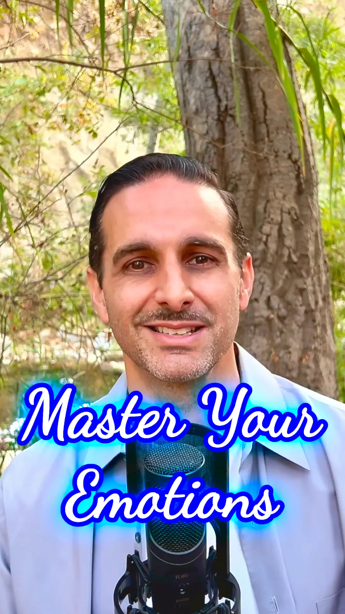
💙 Master Emotions, Inspire Respect!
Mastering emotional control is the key to building trust, honor, and respect in every aspect of life. When we learn to manage our reactions, we inspire others and create lasting impact. Emotional resilience shapes our world!
-
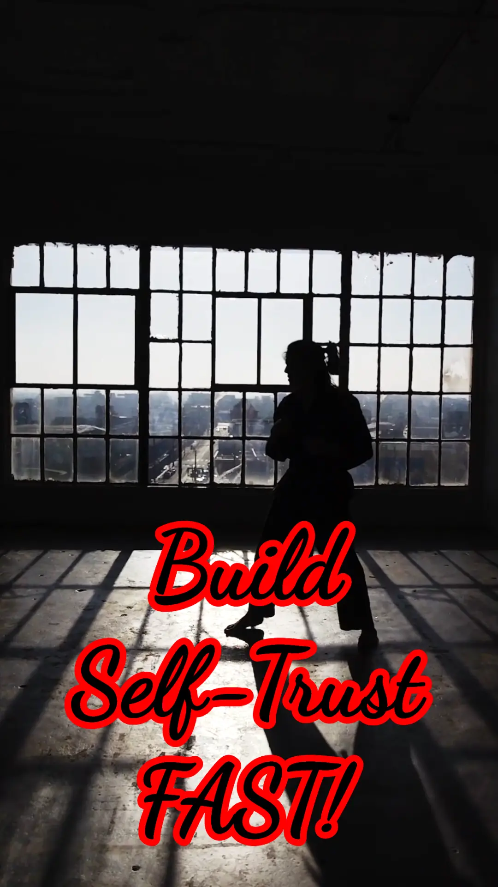
This 1️⃣ Habit Builds Unstoppable Trust!
Honoring commitments to yourself is just as vital as keeping promises to others. When you stay consistent—whether in goals, habits, or personal growth—you reinforce self-trust, build resilience, and boost confidence.
-
 This ☝️ Act of Kindness Changes Everything!
This ☝️ Act of Kindness Changes Everything!
A single act of kindness can spark a chain reaction that transforms lives! 🌍✨ When you pay it forward, others feel inspired to do the same—boosting happiness, trust, and connection.
-
 Will You Do the Right Thing? 🤔
Will You Do the Right Thing? 🤔
Integrity isn’t built in grand moments—it’s shaped by everyday decisions. Imagine finding an error at work. Do you hide it or speak up? These small choices build trust & define your character.
-
 The Secret Power of Kindness 🤯
The Secret Power of Kindness 🤯
Discover how a single act of kindness can create a ripple effect, transforming lives and spreading positivity. Explore our innate human response to compassion and how small gestures can make a significant impact.
-
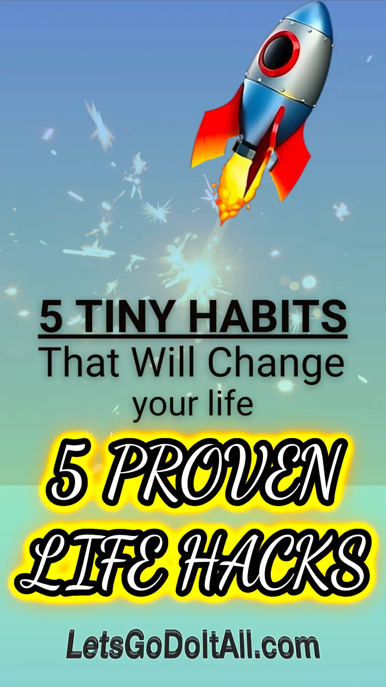
5️⃣ TINY HABITS That Will Change 🫵 Life #PROVEN
Transform your life with five simple micro-habits designed to boost energy, focus, and positivity. Discover how small daily changes can lead to significant personal and professional growth.
-
 ✨ Kindness Can Create Magic ✨
✨ Kindness Can Create Magic ✨
Discover the Ripple Effect of Kindness: ①ne small act of kindness can create ripples that touch countless lives. From a smile to a moment of patience, your actions matter more than you know.
-
 Why 🫵 Lost Without Self-Awareness 🧭
Why 🫵 Lost Without Self-Awareness 🧭
Why is self-awareness crucial for personal growth? Explore how understanding yourself can be the key to making intentional decisions that align with your true passions & values.
-
 This Simple Act Can Change the World 🌍
This Simple Act Can Change the World 🌍
Unlock the power of kindness in 40 seconds. Explore how small acts—like a simple smile or a thoughtful word—can create ripples that impact countless lives. Your actions can spark a wave of positivity in the world.
-
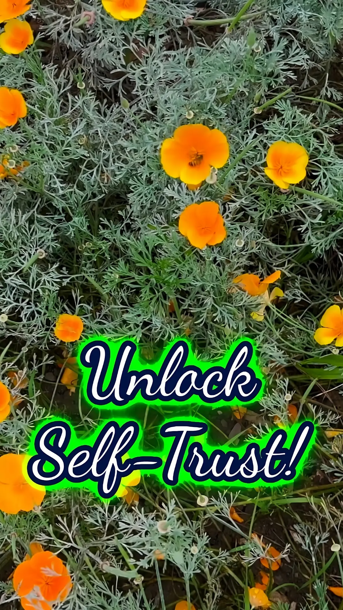
The Secret to Building Self-Trust 🔑
In this personal story, I share how a friend struggled with inner confidence and trustworthiness and how small changes transformed his life. Keeping promises to yourself builds self-trust.
-
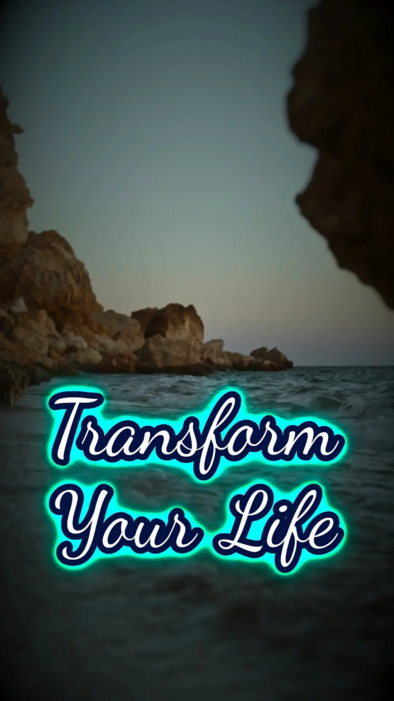
🌊 This 1 Habit Transforms Your Life 🌊
When you build trust from within, it creates a ripple effect that transforms your life. Explore how inner trust radiates outward, enhancing relationships, career growth, and self-confidence.
-
 Build Trust & Confidence: 3️⃣ Easy Steps
Build Trust & Confidence: 3️⃣ Easy Steps
Inner trust is the foundation of confidence & success. Discover 3 actionable steps to build self-trust and create a ripple effect of trustworthiness in your relationships and career.
-
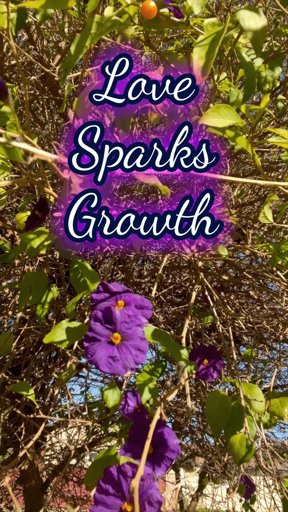
How Love & Attention Spark Growth | #hope
In under 30 sec, explore how giving attention & love to something that seems to be fading can bring it back to life. Anything neglected can be revived with attention and love.
-
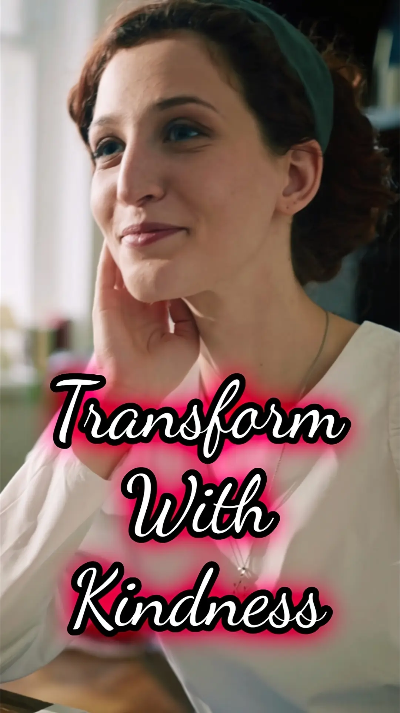
The Secret Power of Small Kindness
Discover the transformative power of small acts of kindness in this clip about cultivating a mindset of kindness. Create positive ripples that change lives including your own!
-
 Kindness Ripples: Your Power to Transform
Kindness Ripples: Your Power to Transform
Unlock the power of kindness in under 90 seconds! Kindness creates ripples that spread positivity! Discover how small acts, like a smile or kind word, transform lives—including yours.
-
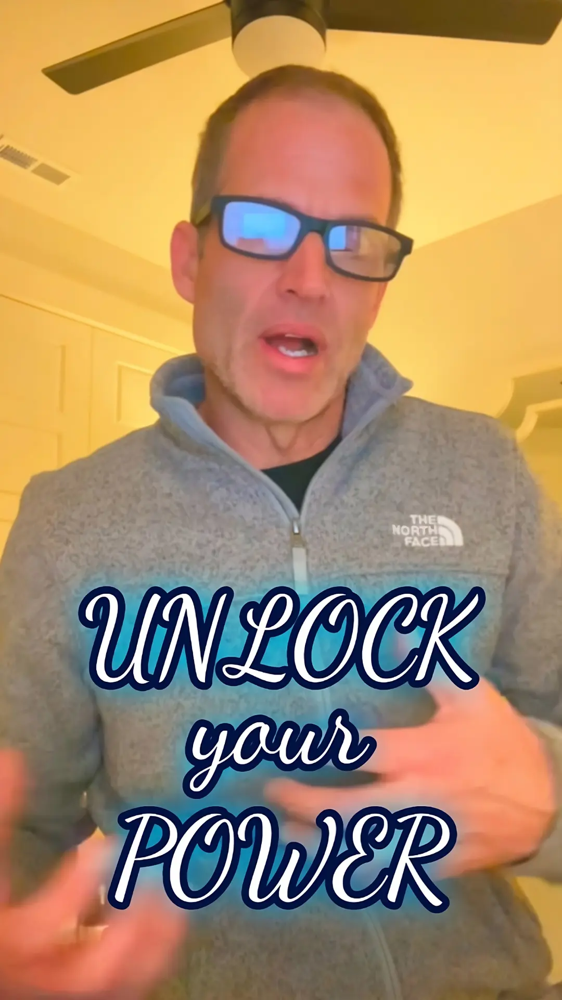
3 Secrets to Knowing Yourself Better
Unlock self-awareness with three tools: ① Journaling ② Mindfulness ③ Feedback. Temet Nosce tips show how understanding yourself can transform your relationships, career, and personal growth.
-
Mindset Secrets for Better Decisions | Dr. Phelps
The CEO of the Cialdini Institute explains how mindset shapes daily decisions. Learn how a calm, focused state can set you up for success. Influence and persuasion principles from the full episode.
-
 The Secret to Making People Say Yes | Dr. Phelps
The Secret to Making People Say Yes | Dr. Phelps
Revealing the Commitment-Consistency Principle and how framing choices boosts influence ethically. Perfect for leadership and business.
-
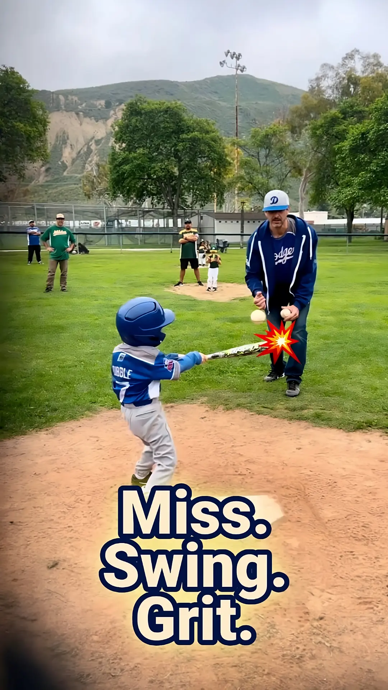
Miss, Swing, Hit: Life's Grit in Action
Watch Gabriel's son learn resilience through Tee Ball. A missed pitch leads to triumph, teaching that failure is a step to success. Inspiring parents and kids to embrace challenges & grow.